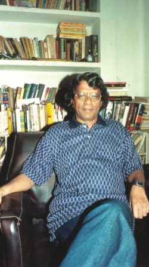

<html>

<head>
<meta http-equiv="Content-Type" content="text/html; charset=windows-1252">
<META NAME="description" CONTENT=" Mukto-mona encourages rationalism among our members.">
<META NAME="keywords" CONTENT="Rationalism,Mukto-mona, Raymond Bradley  ">
<title>Humayun Azad : A Truncated Life MUSTAFA ZAMAN and AHMEDE HUSSAIN </title>
<META NAME="description" CONTENT=" We condemn the verdict on Taslima Nasrin meted out by the court of Gopalganj, Bangladesh.">
<META NAME="keywords" CONTENT="Taslima Nasrin, Nasreen, Gopalganj, verdict, one year prison, blasphemy, Bangladesh, Islamisation, Mukto-mona">

<style>
<!--
 li.MsoNormal
	{mso-style-parent:"";
	margin-bottom:.0001pt;
	font-size:12.0pt;
	font-family:"Times New Roman";
	margin-left:0in; margin-right:0in; margin-top:0in}
.small { font-family: verdana,arial,helvetica,sans-serif; font-size: x-small; }
.replbq{width:100%}h1
	{margin-bottom:.0001pt;
	page-break-after:avoid;
	font-size:16.0pt;
	font-family:"Times New Roman";
	font-weight:normal; margin-left:0pt; margin-right:0pt; margin-top:0pt}
-->
</style>

</head>

<body bgproperties="fixed">

<blockquote>
  <p align="center">
  </p>
  <div align="center">
    <table id="AutoNumber2" borderColor="#111111" cellSpacing="0" cellPadding="0" width="606" border="0">
		<tr>
			<td style="line-height: 1.25em; font-family: arial,helvetica,sans-serif; font-size: 79%">
			<a href="../../index.html">
			</a></td>
			<td style="line-height: 1.25em; font-family: arial,helvetica,sans-serif; font-size: 79%">
			<a href="../../new_site/mukto-mona/muk-articles.html">
			</a></td>
			<td style="line-height: 1.25em; font-family: arial,helvetica,sans-serif; font-size: 79%">
			<a href="../../new_site/mukto-mona/muk-science.html">
			</a></td>
			<td style="line-height: 1.25em; font-family: arial,helvetica,sans-serif; font-size: 79%">
			<a href="../../new_site/mukto-mona/muk-rationalism.html">
			</a></td>
		</tr>
		<tr>
			<td style="line-height: 1.25em; font-family: arial,helvetica,sans-serif; font-size: 79%">
			<a href="../../new_site/mukto-mona/muk-humanrights.html">
			</a></td>
			<td style="line-height: 1.25em; font-family: arial,helvetica,sans-serif; font-size: 79%">
			<a href="../../new_site/mukto-mona/muk-currentaffairs.html">
			</a></td>
			<td style="line-height: 1.25em; font-family: arial,helvetica,sans-serif; font-size: 79%">
			<a href="../../new_site/mukto-mona/muk-literature.html">
			</a></td>
			<td style="line-height: 1.25em; font-family: arial,helvetica,sans-serif; font-size: 79%">
			<a href="../../new_site/mukto-mona/muk-bengaliheritage.html">
			</a></td>
		</tr>
	</table>
	<hr color="#FFFFFF">
    <table cellSpacing="0" cellPadding="0" width="600" border="0">
      <tbody>
        <tr>
          <td colSpan="2" rowSpan="3">
          </td>
          <td class="k" bgColor="#6fb1d9">
			</td>
          <td align="right" colSpan="2" rowSpan="3">
          </td>
        </tr>
        <tr>
          <td class="h" bgColor="#eef5fa" height="22">
            &nbsp;
          </td>
        </tr>
        <tr>
          <td class="k" width="780" bgColor="#6fb1d9">
          </td>
        </tr>
        <tr>
          <td class="k" width="1" bgColor="#6fb1d9">
          </td>
          <td width="18" bgColor="white">
			</td>
          <td bgColor="#FFFFFF">
  <table border="1" width="48%">
  </table>
  <table cellSpacing="0" cellPadding="0" width="600" border="0">
	<tr>
		<td width="600">
		<table cellSpacing="0" cellPadding="0" width="600">
			<tr>
				<td vAlign="top" width="600">
				<div align="center">
					<table cellSpacing="0" cellPadding="0" width="600">
						<tr>
							<td vAlign="top" width="600">
							<font face="Verdana, Arial, Helvetica, sans-serif" color="#333333" size="6">
							</font><font face="Verdana, Arial, Helvetica, sans-serif" size="6" color="#008000">Humayun 
							Azad</font><p>
							<font face="Verdana, Arial, Helvetica, sans-serif" color="#990033" size="7">
							A Truncated<br>
							Life </font></p>
							<p>
							<font face="Verdana, Arial, Helvetica, sans-serif" color="#333333" size="2">
							<strong>MUSTAFA ZAMAN<br>
							and<br>
							AHMEDE HUSSAIN</strong></font></p>
							<p>
							<font face="Verdana, Arial, Helvetica, sans-serif" color="#333333" size="2">
							While lamenting his death, one of Humayun Azad's 
							illustrious classmates wrote, &quot;His death is a 
							reminder of the tragedy of the Greek god Icarus.&quot; On 
							a poetic plateau, this may be one way of expressing 
							Humayun Azad's rise to fame and his sudden demise. 
							However, we do not live in myths or epics, let alone 
							be affected by their magic or overwhelming sense of 
							fatality. As humans we tread on the treacherous 
							ground of reality, where our own sets of interests 
							and aspirations are constantly being challenged by 
							those of others'. Writer, poet, academic Dr Humayun 
							Azad had to deal with real enmity in all its 
							sinister implications. Although, Azad was a poet 
							himself, for him, there was no room for poetic 
							gesture to characterise his own plight that befell 
							him since the machete attack on February 27, 2004.</font></p>
	<div align="center">
		<center>
		<table cellSpacing="0" cellPadding="20" width="79%" bgColor="#f5f5f1" border="0">
			<tr>
				<td>
				<p align="justify"><font color="#008000">
				<span style="font-family: Arial">Dr Azad had been fearing for 
				his life ever since excerpts of his new novel, Pak Sar Zamin 
				Shaad Baad (Pakistan's national anthem; Blessed be the Sacred 
				Land) was first published in the Daily Ittefaq's Eid supplement 
				in 2003. In an email to <b>Mukto-mona</b>, an independent 
				website, Azad wrote, &quot;The Ittefaq published a novel by me named 
				Pak Sar Zamin Shaad Baad in its Eid issue in December 3. It 
				deals with the condition of Bangladesh for the last two years. 
				Now the (religious) fundamentalists are bringing out regular 
				processions against me, demanding exemplary punishment. The 
				attached two files with this letter will help you understand.&quot; 
				Dr Azad sent two photographs along with the mail....</span></font></td>
			</tr>
		</table>
		</center></div>
							<p>&nbsp;</p>
							<p>
							<font face="Verdana, Arial, Helvetica, sans-serif" color="#333333" size="2">
							Although Azad came back apparently fully recovered 
							and showing clear signs of rejuvenation, the last 
							three months of his life was like living under the 
							shadow of death. Anonymous callers kept threatening 
							him and his family. Even an abduction attempt on his 
							son was made on July 5. What was termed by his 
							well-wishers as &quot;a triumphal return&quot; was soon marred 
							by despotic efforts allegedly by Islamic extremist 
							elements to thwart his intellectual pursuits and mar 
							his family's peace. </font></p>
							<p>
							<font face="Verdana, Arial, Helvetica, sans-serif" color="#333333" size="2">
							Even 
							before the attempt on his life, Azad was constantly 
							being intimidated by this quarter. He was dubbed a
							<em>murtad</em> (apostate) by the religious zealots 
							long before the attempt on his life. Since the day 
							his first novel, <em>Chhappanno Hajar Borgomile</em> 
							became a runaway success in 1994, the fear of that 
							same quarter magnified in the face of the power of 
							his sharp and witty tongue and his prolific pen. 
							They marked him out as an &quot;enemy of Islam&quot;. The last 
							10 years of his life can only be summed up as one 
							man's struggle against the escalating domination of 
							the religious right.</font></p>
							<p>
							<font face="Verdana, Arial, Helvetica, sans-serif" color="#333333" size="2">
							Was Azad a left-of-the-field thinker? Was he a 
							politically correct voice in a politically corrupt 
							nation? In fact, these are the characteristics Azad 
							religiously avoided, or so it seemed from the stream 
							of writings and commentaries that he produced during 
							the last decade of his life. Being a freethinker, he 
							often acted like a rebel, perhaps to defy labeling, 
							or to vent his disenchantment over the deteriorating 
							scenario of his beloved motherland. He was, in fact, 
							a maverick among the academics of Dhaka University, 
							where he used to teach in the Department of Bangla.</font></p>
							<p>
							<font face="Verdana, Arial, Helvetica, sans-serif" color="#333333" size="2">
							As 
							a writer, Azad was critically engaged with his 
							surroundings. Publicly known for his passionate and 
							opinionated temperament, Azad had a mellow private 
							side to his character that many may not have known 
							before his death. He was a family man with a strong 
							attachment to his children and wife. In his 
							professional life, during many an academic 
							procedure, while making crucial official decisions 
							along with his colleagues, Azad used to concede his 
							position to respect the other person's opinion.</font></p>
							<p>
							<font face="Verdana, Arial, Helvetica, sans-serif" color="#333333" size="2">
							Humayun Azad was born on April 28, 1947 in the 
							village of Rarikhal of Bikrampur district. The 
							village was already famous for being the birth place 
							of Sir Jagadish Chandra Bose, a scientist of 
							international repute. In 1962, Azad completed his 
							ISC (equivalent to HSC) from the school that takes 
							after the scientist's name -- Sir JC Bose 
							Institution. As he secured a position in the merit 
							list his future course led him to the highest seat 
							of learning, Dhaka University. He completed his BA 
							in Bangla in 1967 and MA in the same subject the 
							next year.</font></p>
							<p>
							<font face="Verdana, Arial, Helvetica, sans-serif" color="#333333" size="2">
							Abu Kaiser, one of his fellow students in the 
							department of Bangla, Dhaka University, remembers 
							Azad as the student who used to don &quot;a Bonde Ali 
							Miah-like hair-do&quot; and &quot;whose reticence belied his 
							intelligence and his goonpona (creativity)&quot;. And he 
							went on to add that Azad used to befriend only the 
							meritorious students of his class and had little 
							time to waste in idle chit chat.</font></p>
							<p>
							<font face="Verdana, Arial, Helvetica, sans-serif" color="#333333" size="2">
							&quot;We 
							were politically active and were attached to 
							different student organisations. However, Azad 
							stayed away from the hubbub of real polity,&quot; wrote 
							Kaisar in a recently published article. But Azad 
							first became famous for a political poem he wrote 
							during his student life. &quot;Blood Bank&quot; was the poem 
							that made a ripple in the campus. It even went 
							beyond that when people started to consider it a 
							testimony to the political climate of the '60s, 
							which was severely subjugated to the military rule. 
							The poem was published in Kolkata in the weekly &quot;Desh&quot; 
							and the &quot;Amrito&quot;.</font></p>
							<p>
							<font face="Verdana, Arial, Helvetica, sans-serif" color="#333333" size="2">
							Mashukul Haq, editor of the Observer Magazine and a 
							classmate of Azad remembers him as a brilliant 
							student &quot;who came from a science background and 
							switched to Bangla and turned out to be the best in 
							his class.&quot; &quot;He was also impulsive in nature, and it 
							was evident at an early stage that he was destined 
							to become a rebellious voice,&quot; he adds. Haq 
							considers him a voice against those who use religion 
							as a political tool.</font></p>
							<p>
							<font face="Verdana, Arial, Helvetica, sans-serif" color="#333333" size="2">
							Latifa Kohinoor, who later became the wife of Azad, 
							and her numerous friends were virtually in awe of 
							Azad's intellectual capacity to comment on every 
							other subject. It was poetry and letter that brought 
							the couple together; till this day Latifa considers 
							Azad her favourite poet.</font></p>
							<p>
							<font face="Verdana, Arial, Helvetica, sans-serif" color="#333333" size="2">
							The 
							couple got married on October 12, 1975 and they &quot; 
							lived in Scotland for one year&quot;. Right after Azad 
							came back from his study in Edinburgh, where he 
							completed his PHD in 1996, they started their lives 
							in a joint family.</font></p>
							<p>
							<font face="Verdana, Arial, Helvetica, sans-serif" color="#333333" size="2">
							&quot;He was a responsible father. When the children were 
							born, it was Azad who used to take care of them most 
							of the time as my job kept me away from home from 
							nine in the morning till five in the afternoon,&quot; 
							Latifa remembers. For a man of letter, he was too 
							anchored in the peace and quiet of family life. His 
							two daughters and only son constituted the centre of 
							his life.</font></p>
							<p>
							<font face="Verdana, Arial, Helvetica, sans-serif" color="#333333" size="2">
							Azad started his professional life as a teacher in 
							Chittagong College. After a brief stint at that 
							college he joined Chittagong University. Later he 
							joined as a teaching staff of Jahangirnagar 
							University, where he taught Bangla from 1976 to 1977 
							before finally joining Dhaka University in 1978 as 
							an Associate Professor. It was not until 1986 that 
							he was made a Professor where he remained so till 
							his sad demise.</font></p>
							<p>
							<font face="Verdana, Arial, Helvetica, sans-serif" color="#333333" size="2">
							In 
							1973, while he was still a teacher at Chittagong 
							University, Azad got a scholarship at Edinburgh 
							University. It was here that he, with his grounding 
							in Bangla literature, got the opportunity to delve 
							into linguistics. During his three year study he 
							produced his first thesis on language, which was his 
							PhD paper: &quot;Pronominalisation in Bangla&quot;.</font></p>
							<p>
							<font face="Verdana, Arial, Helvetica, sans-serif" color="#333333" size="2">
							Although he made his name as a poet while he was 
							still a student, his essays were revered by many 
							from the beginning. The novelist Azad first emerged 
							in the pages of a literary supplement of the <em>
							Daily Ajker Kagoj</em> with his <em>Chhappanno Hajar 
							Borgomile</em>. It was 1993, and the novel was well 
							received by the readers. They recognised in it a 
							genre of its own kind. In fact, through this first 
							novel he started enjoying a wide readership for the 
							first time. The serially published novel was later 
							reintroduced in book form. It came out during the 
							Bangla Academy 'Book Fair' in 1994 and it was one of 
							the much-sought-after books of that year that saw 
							its third edition during the month-long fair. Azad's 
							wife Latifa Kohinoor remembers the time as one of 
							the most crucial landmarks in their lives. Azad not 
							only became a popular writer, he soon positioned 
							himself as a popular spokesman in his community, and 
							it was from this point on that his ideas started to 
							receive flak from a certain quarter steeped in 
							despotic religious beliefs. </font></p>
							<p>
							<font face="Verdana, Arial, Helvetica, sans-serif" color="#333333" size="2">
							&quot;He was a scholar set out to explore the world of 
							linguistics. There was no financial reward for what 
							he was doing, so it was I who kind of challenged him 
							by asking, 'will you be able to write novels?'&quot; 
							recalls Latifa Kohinoor. Azad's answer was 
							unmistakably bold. &quot;He said, 'I could and my first 
							novel will be a hit',&quot; remembers Kohinoor. This was 
							a display of his characteristic confidence .</font></p>
							<p>
							<font face="Verdana, Arial, Helvetica, sans-serif" color="#333333" size="2">
							Sajjad 
							Sharif, a poet and one of the Deputy Editors of the
							<em>Daily Prothom Alo</em>, believes that Azad's 
							most important contribution was in linguistics. &quot;He 
							had a lot to contribute in Bangla language in its 
							grammar. After all these years we still do not have 
							our own grammar. Humayun Azad understood the 
							mutating nature of grammar and realised the 
							importance of liberating it from its present English 
							and Sanskrit foundation,&quot; Sharif adds. &quot;Azad came up 
							with an original idea to write Bangla grammar. He 
							submitted his plan to the Bangla Academy. It was 
							written in an essay form and was published in a 
							journal,&quot; continues Sharif, who thinks the Academy 
							failed to understand the depth and breadth of his 
							proposal.</font></p>
							<p>
							<font face="Verdana, Arial, Helvetica, sans-serif" color="#333333" size="2">
							Sharif believes that the most important works of 
							Azad are the two hefty volumes of his compiled works 
							on Bangla language where the best write-ups of the 
							last one and half hundred years are compiled. &quot;He 
							wrote elaborate and lengthy prefaces that 
							undoubtedly brought out the best in him,&quot; Sharif 
							contends. &quot;While in Kolkata I heard people wondering 
							about Azad's ability to bring out two huge tomes and 
							write such wonderful essays to go with them at a 
							young age,&quot; exclaims Latifa. </font></p>
							<p>
							<font face="Verdana, Arial, Helvetica, sans-serif" color="#333333" size="2">
							As 
							a writer who produced 70 books, Azad's 
							acknowledgement mostly came from his readers. He was 
							one of the writers whose collections of essays could 
							become best sellers. “<em>Nari</em> is one of his 
							best books,&quot; believes Sajjad Sharif, who also 
							considers his <em>Lal Neel Dipaboli</em> and <em>
							Koto Nodi Shorobor</em>, written for children, as 
							two of his most important works. For his 
							contribution to literature he received the Bangla 
							Academy award in 1987.</font></p>
							<p>
							<font face="Verdana, Arial, Helvetica, sans-serif" color="#333333" size="2">
							Syed Mehdi Momin, a journalist of The Independent, 
							writes in an article that Azad never wanted to 
							associate himself with the culture of sycophancy 
							which he was surrounded by. He himself was a man who 
							never swerved from what he felt like saying. Even 
							&quot;his literal handshake with death could not subdue 
							his spirit,&quot; Momin wrote.</font></p>
							<p>
							<font face="Verdana, Arial, Helvetica, sans-serif" color="#333333" size="2">
							A 
							few days before he left for Germany on another 
							scholarship from PEN (an international organisation 
							of poets, essayists and novelists), Azad, as usual, 
							lambasted the religious right, yet he ended his 
							speech on a positive note. He said that the &quot;future 
							of Bangladesh is not that bleak&quot;. With this last 
							note of optimism he left the country for Munich, 
							Germany. Azad was never a person who craved to 
							retreat from his own land; escape was the last thing 
							on his mind. Although he was known to many as being 
							confrontational in nature, Azad was a patriot with a 
							deep sense of belonging to his own land. &quot;He used to 
							become restless in Dhaka and needed to retreat to 
							his own village once every month. Rarikhal, his home 
							village, was a life saver to him,&quot; asserts Latifa.</font></p>
							<p>
							<font face="Verdana, Arial, Helvetica, sans-serif" color="#333333" size="2">
							&quot;He went abroad for two years, and this was a man 
							who could not live in America for more than two 
							months. We thought, in the face of all the 
							hostility, it would be wise to leave the country,&quot; 
							exclaims Latifa. His near ones as well as his string 
							of well-wishers never thought that it would be his 
							last farewell. In the end what is left is the saga 
							of a man who started out as a brilliant essayist and 
							later decided on a mode of expression, which was a 
							novel and that brought him popularity as well as the 
							wrath of a vested quarter. What more is to be found 
							is his imprint in all the outpourings of his 
							creativity.</font></p>
							<p>
							<font face="Verdana, Arial, Helvetica, sans-serif" color="#333333" size="2">
							On 
							the evening of that fateful Friday, Humayun Azad, in 
							jeans and fatua, was sitting at the stall of Agami 
							Prokashani at the Amar Ekushey Book Fair. &quot;Azad left 
							the fair at around 8:45 in the evening telling me he 
							would go home,&quot; says Osman Gani, owner of the 
							publishing house. When he reached the pavement 
							outside the Bangla Academy, a young man approached 
							him for an autograph; Dr Azad obliged and crossed 
							the road for a rickshaw. And then two unknown 
							assailants, armed with chopping knives, hacked the 
							56-year-old writer several times on the jaw, lower 
							part of the neck and hands.</font></p>
							<p>
							<font face="Verdana, Arial, Helvetica, sans-serif" color="#333333" size="2">
							Conscious but profusely bleeding, Dr Azad was taken 
							to the nearby Dhaka Medical College Hospital (DMCH). 
							According to newspaper reports , no doctor was 
							available at the emergency unit of the DMCH; Azad 
							was later sent to the Combined Military Hospital(CMH).</font></p>
							<p>
							<font face="Verdana, Arial, Helvetica, sans-serif" color="#333333" size="2">
							Dr Azad had been fearing for his life ever since 
							excerpts of his new novel, <em>Pak Sar Zamin Shaad 
							Baad</em> (Pakistan's national anthem; Blessed be 
							the Sacred Land) was first published in the <em>
							Daily Ittefaq</em>'s Eid supplement in 2003. In an 
							email to Mukto-mona, an independent website, Azad 
							wrote, &quot;The Ittefaq published a novel by me named
							<em>Pak Sar Zamin Shaad Baad</em> in its Eid issue 
							in December 3. It deals with the condition of 
							Bangladesh for the last two years. Now the 
							(religious) fundamentalists are bringing out regular 
							processions against me, demanding exemplary 
							punishment. The attached two files with this letter 
							will help you understand.&quot; Dr Azad sent two 
							photographs along with the mail.</font></p>
							<p>
							<font face="Verdana, Arial, Helvetica, sans-serif" color="#333333" size="2">
							Dr 
							Azad's assailants, in fact, might have come right 
							out of the very book, which had put his life under 
							increasing threat. It depicts the story of a zealot 
							who wants to establish a &quot;Taliban-styled distorted 
							Pakistan&quot; in Bangladesh. &quot;We aren't alone, our 
							brothers all over the world are doing their work. If 
							they fly an aeroplane into a building somewhere, if 
							cars crash into a hospital or a hotel, or if a bomb 
							blast kills 300 people in some recreational centre, 
							then we know it's the work of our brothers; in other 
							words it is our work, it is Jihad,&quot; the protagonist 
							of the book, a member of Jama-e-Jihad-e-Islami 
							Party, says in a monologue.</font></p>
							<p>
							<font face="Verdana, Arial, Helvetica, sans-serif" color="#333333" size="2">
							The name Jama-e-Jihad-e-Islami is believed to be an 
							allegory to the Jammat-e-Islami Bangladesh (JI), one 
							of the major partners in the ruling four-party 
							coalition government. In fact, Karim Ali Islampuri, 
							another character of the book says, &quot;We must seize 
							power. Right now, we are with the power and the main 
							party. At some point, power will come to us; we will 
							become the main party. We are entering everywhere-- 
							Islam will be established; (another) Pakistan will 
							be created. There won't be any infidels, Malauns 
							(Hindus); there won't be any Hindu or Jew in guise 
							of Muslims.&quot;</font></p>
							<p>
							<font face="Verdana, Arial, Helvetica, sans-serif" color="#333333" size="2">
							JI, 
							in its response, took the content of the <em>Pak 
							Saar Zamin Shaad Baad</em> quite seriously. On 
							January 25, Maulana Delwar Hossain Sayeedi, a JI MP 
							demanded the introduction of the Blasphemy Act to 
							block the publication of &quot;such books&quot;. Besides 
							Sayeedi, many bigots declared the famous writer a
							<em>murtad</em> (apostate). Momtazi, emir of 
							Hifazate Khatm-e-Nabuat Movement and Imam of Rahim 
							Metal Mosque demanded the professor's arrest and 
							trial on December 12, only months before the attack. 
							The BNP-led four-party alliance did nothing to nab 
							those who were issuing death warrants to one of the 
							most eminent linguists of the country.</font></p>
							<p>
							<font face="Verdana, Arial, Helvetica, sans-serif" color="#333333" size="2">
							The government however, finally took the matter 
							seriously. Dr Azad was sent to Bumrungrad Hospital 
							in Thailand; and the maverick writer was, slowly but 
							steadily, recovering. &quot;You don't know how happy I 
							was then,&quot; says Latifa.</font></p>
							<p>
							<font face="Verdana, Arial, Helvetica, sans-serif" color="#333333" size="2">
							That did not last long; the whole situation changed 
							for the worse as soon as the Azad was back home. 
							&quot;The zealots were back too and they started 
							threatening us on the phone,&quot; Latifa says. In the 
							last six months the family has been through extreme 
							insecurity. &quot;Then they threatened to bomb our house 
							on Fuller road,&quot; Latifa says.</font></p>
							<p>
							<font face="Verdana, Arial, Helvetica, sans-serif" color="#333333" size="2">
							The 
							systematic persecution, actually, reached its zenith 
							at the time when Dr Azad decided to give his 
							research project on German poet Heinrich Heine a 
							second thought. &quot;Azad had wanted to do research on 
							Heine long before the attack; He had even prepared 
							all his notes by the end of December,&quot; says Latifa 
							Kohinoor. The writer, however, did not get any 
							response from the PEN; and when it came about two 
							months after the attack, Latifa felt uneasy.</font></p>
							<p>
							<font face="Verdana, Arial, Helvetica, sans-serif" color="#333333" size="2">
							Dr Azad, too, had second thoughts before he boarded 
							the plane for Munich. &quot;Azad talked with almost 
							everyone he knew about the scholarship,&quot; Latifa 
							recalls. She was against the idea of her husband 
							leaving the country as she thought it would separate 
							the family and he would not eat properly which would 
							affect his health. &quot;He was a very bad cook,&quot; Latifa 
							smiles shyly. But Azad's wife withdrew whatever 
							reservations she had when their only son Anonno was 
							kidnapped days before the writer's planned 
							departure.</font></p>
							<p>
							<font face="Verdana, Arial, Helvetica, sans-serif" color="#333333" size="2">
							&quot;Three bearded men frisked Anonno away while he was 
							returning from school. They took him to an abandoned 
							house near the SM Hall and asked him about Azad's 
							fellowship,&quot; Latifa says. Two of them were tightly 
							holding Anonno's hands while the other was asking 
							him when his father would leave the country, she 
							says. As one of the kidnappers whispered something 
							in the other's ear; Anonno broke free from their 
							grasp and ran home.</font></p>
							<p>
							<font face="Verdana, Arial, Helvetica, sans-serif" color="#333333" size="2">
							Dr 
							Azad, however, reacted to his son's kidnapping with 
							uncharacteristic calmness; &quot;as if he knew this would 
							happen,&quot; Latifa shudders while describing the event. 
							But the writer, who was drafting his new novel 
							titled <em>Mrityur Ek Second Durey</em> (A Second 
							Away From Death), could not escape death in Munich. 
							Dr Humayun Azad was found dead in his Munich 
							apartment by a fellow PEN member.</font></p>
							<p>
							<font face="Verdana, Arial, Helvetica, sans-serif" color="#333333" size="2">
							Rumours ran amok when the news of Dr Azad's death 
							broke out. His family still believes the 
							fundamentalists could not kill him here, so they 
							followed through with their plan in the German city. 
							&quot;How is it possible that the person we saw alive and 
							well here in Dhaka a few days ago, all of a sudden 
							fell sick and died of a heart attack?&quot; Latifa asks. 
							&quot;He called home only two days before they poisoned 
							him to death. In this era of modern science you will 
							never be able to find out the truth,&quot; she says.</font></p>
							<p>
							<font face="Verdana, Arial, Helvetica, sans-serif" color="#333333" size="2">
							Controversy however did not leave Dr Azad, arguably 
							the last outspoken Bangali writer, even after his 
							death. &quot;The fundamentalists are still threatening us 
							on the phone. Someone called yesterday and told me 'Humayun 
							Azad could not escape from our grasp; we hunted him 
							down in Germany. Now it is your turn',&quot; says Latifa. 
							&quot;I do not know what we have done to them to deserve 
							this,&quot; she continues; &quot;What problem can they have 
							with a dead writer's family?&quot; Latifa Kohinoor asks.</font></p>
							<p><i>
							<font face="Verdana, Arial, Helvetica, sans-serif" size="2" color="#333333">
							The article was originally published in Daily Star 
							Magazine (Volume 4 Issue 11 | September 1, 2004)</font></i></td>
						</tr>
					</table>
				</div>
				</td>
			</tr>
		</table>
		</td>
	</tr>
	</table>
	<hr width="20%">
	<p><b>Remembering Humayun Azad: </b></p>
	<ul type="square">
		<li>
		<p style="margin-left: -20; margin-right: 5; margin-top: 8; margin-bottom: 8">
  <o:p>
  	<span lang="EN-US">
  <o:p>
  		<font color="#800000">
  		<a style="text-decoration: none" href="https://gold.mukto-mona.com/Special_Event_/rationalist_day/2005/HAzad2005_jahed.html">
		Remembering Humayun Azad : Gone but not forgotten</a>&nbsp; </font>
		<font color="#000080">
  		Jahed Ahmed</font></o:p></span></o:p></li>
		<li>
		<p style="margin-left: -20; margin-right: 5; margin-top: 8; margin-bottom: 8">
		<a style="text-decoration: none" href="https://gold.mukto-mona.com/Special_Event_/rationalist_day/2005/humayun_azad_1_yr.html">
		The first anniversary of the brutal attack on Humayun Azad</a> &nbsp;<span style="font-family: Times New Roman">Dr. 
		Jaffor Ullah</span></li>
		<li>
		<p style="margin-left: -20; margin-right: 5; margin-top: 8; margin-bottom: 8">
		<a style="text-decoration: none" href="open_letter280704.htm">An open 
		letter to the PM, leader of the opposition, and my compatriots </a>
		Humayun Aazad</li>
		<li>
		<p style="margin-left: -20; margin-right: 5; margin-top: 8; margin-bottom: 8">
		<a style="text-decoration: none" href="https://gold.mukto-mona.com/news/social_reform_appeal.html">
		Some societal reforms is what is urgently needed in Bangladesh</a> 
		Mukto-Mona</li>
    </ul>
	<p style="margin-left: -20; margin-right: 5; margin-top: 8; margin-bottom: 8" align="right">
	<a href="https://gold.mukto-mona.com/Articles/humayun_azad/humayun_azad_dhormanubhuti.html">
	More on Dr. Humayun Azad</a> ...</p>
	<p class="MsoNormal"><span lang="EN-CA">&nbsp;</span></p></td>
          <td width="14" bgColor="white">
			</td>
          <td class="k" width="1" bgColor="#6fb1d9">
          </td>
        </tr>
        <tr>
          <td vAlign="top" align="left" colSpan="2" rowSpan="2">
          </td>
          <td bgColor="white">
			</td>
          <td vAlign="top" align="right" colSpan="2" rowSpan="2">
          </td>
        </tr>
        <tr>
          <td class="k" bgColor="#6fb1d9">
			</td>
        </tr>
      </tbody>
    </table>
  	<hr color="#FFFFFF">
	<table id="AutoNumber3" borderColor="#111111" cellSpacing="0" cellPadding="0" width="606" border="0">
		<tr>
			<td style="line-height: 1.25em; font-family: arial,helvetica,sans-serif; font-size: 79%">
			<a href="../../index.html">
			</a></td>
			<td style="line-height: 1.25em; font-family: arial,helvetica,sans-serif; font-size: 79%">
			<a href="../../new_site/mukto-mona/muk-secularnews.html">
			</a></td>
			<td style="line-height: 1.25em; font-family: arial,helvetica,sans-serif; font-size: 79%">
			<a href="../../new_site/mukto-mona/muk-projects.html">
			</a></td>
			<td style="line-height: 1.25em; font-family: arial,helvetica,sans-serif; font-size: 79%">
			<a href="../../new_site/mukto-mona/muk-forums.html">
			</a></td>
		</tr>
	</table>
  </div>
</blockquote>

</body>

</html>